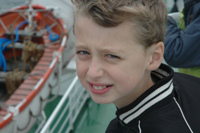

Samuel Schwab

Hallo, ik ben Samuel Schwab. Dit is mijn eigen website. Ik ben de zoon van Arend Schwab. Mijn hobbies zijn schaken, figuren verfen, spelen met mijn treinbaan (Märklin HO) , fietsen en computeren. Mijn lievelings eten is Kaasfondue. Mijn Oma woont op Texel en wij gaan daar vaak naar toe. Laatst zijn op Åland geweest, tijdens de zomervakantie. Wij waren daar samen met vrienden uit Amerika. Het was heel erg leuk. Wij zijn daar gaan zeilen, roeien, fietsen en wandelen. Mijn Vader is erg handig en mijn Moeder is lief en kan heel lekker koken. Ik heb ook nog een broertje (Simon) en een zusje (Salomé). Ik woon in Rotterdam en ga naar de Montessorischool. Ik ben tien jaar oud.